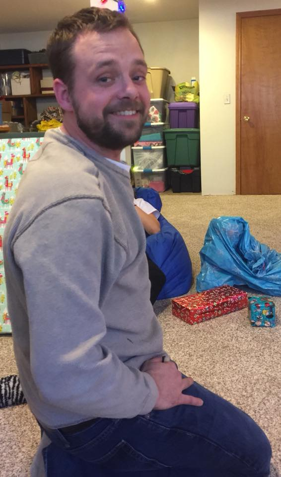

 I started my career in the food and beverage industry at the age of 14 as a bus boy and a dish washer. I spent the first three years in the industry with that until i got promoted to cook. After that I moved away from place to place serving, cooking, hosting, and bartending until I went to college and got my Associated degree in Business Administration. After that I moved into management and currently manage all 8 Starbucks at the KCI Airport.